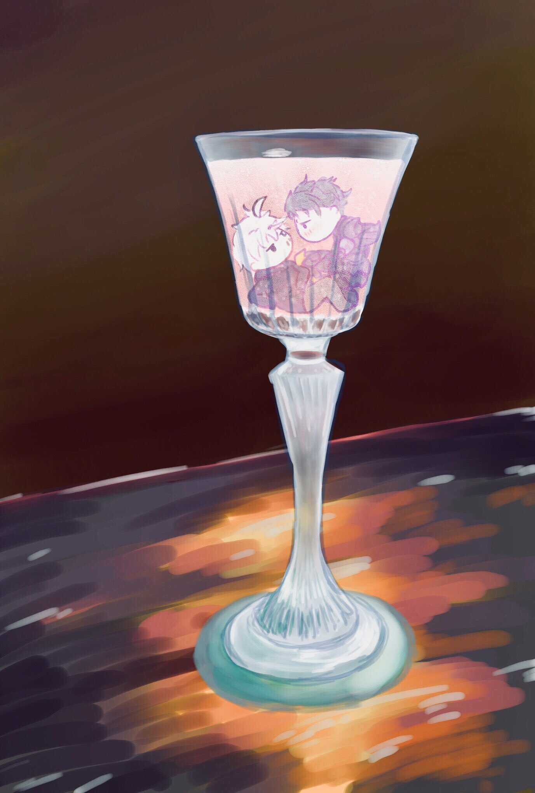

about
my profile
佐藤優理のポートフォリオサイトです。
主なスキル
- HTML/CSS
- Java Script
- Python
- Node.js（学習中）
program
js and py
GIF画像変換
2024.1 Python(Tkinter)

制作記録
趣味のイラストに関連させて、パラパラ漫画のようにGIF画像を作れるGUIアプリを制作しました。
Tkinterを使用する前には、Hit＆BlowのPython版をeelで作成したこともあり、eelでの制作を考えていましたが、ドラッグアンドドロップ機能のテスト時に不便があり、Tkinterに変更しました。
制作中拘った点は、FPS数をプルダウンで選択できるようにした点です。